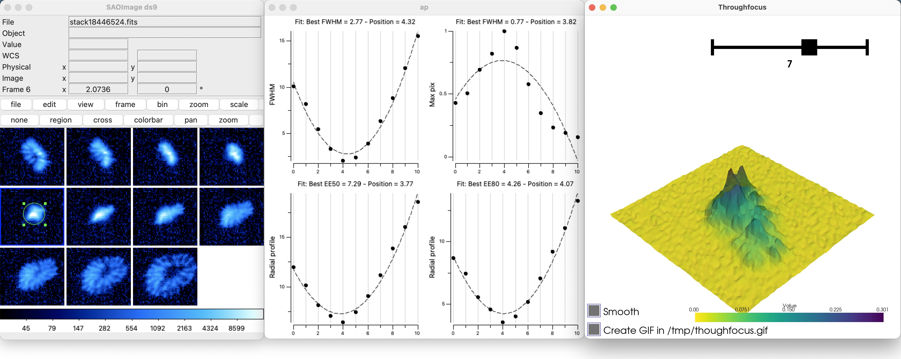
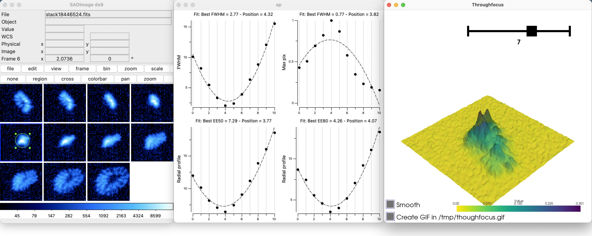

The different functions
The functions are divided into three categories to help the organization: Generic functions, instrumentation-related functions, and astronomical-software-related functions. To make more accessible the understanding of each function, they are possibly prefixed by three badges:
-
Boosting interaction: These functions are considered to improve the interactivity between the user and the visualized data. This interaction can be based on user-defined regions, interactive fitting, generation of pickable metadata, etc.
-
DS9 not required: The function is totally accessible via Terminal independently from
DS9, which means that the function does not needDS9to be installed/open for being called. This can be interesting for server users. -
Multi-image processing: The function, accessible via
Shellcommand, can be run on several images, and each analysis will run on a different thread
 pyds9plugin's functions divided in the three sub-extensions: generic functions, instrumentation and astronomical software. The terminal icon emphasize functions that do not require DS9 to be launched, which can be interesting for generalizing the processing on a server.
Most of these functions (highlighted with the wheel icon) are compatible with multi-image and multi-threaded analysis.
Functions with enhanced interactivity based on pickable meta-data for instance are marked with the interactivity icon.
pyds9plugin's functions divided in the three sub-extensions: generic functions, instrumentation and astronomical software. The terminal icon emphasize functions that do not require DS9 to be launched, which can be interesting for generalizing the processing on a server.
Most of these functions (highlighted with the wheel icon) are compatible with multi-image and multi-threaded analysis.
Functions with enhanced interactivity based on pickable meta-data for instance are marked with the interactivity icon.
Generic functions
This series of very general functions aims at filling some gaps of DS9
with stable generic functions (fitting, region-based functions), gaining
some time with key functions: (change display settings/lock parameters),
etc.
-
Change Display Parameters This basic function applies specific thresholding, scale, and colormap to the
DS9-loaded image to give a quick and general visualization of the image. Accessible via one key hit (S), this allows exploring the full depth of the image quickly. More interestingly, the user can focus on a specific region of the image by creating and selecting a box or a circle on the region of interest. -
Lock / Unlock Frames Access all the locking parameters of
DS9frames at once to gain time: frame, crosshair, smooth, scale-limits, colorbar. -
Create Header DataBase Creates a catalog combining all meta-data information.
-
Filtering & organizing images Uses fits file database to create and order nicely filtered fits files
-
Macro / Python Command Interprets a Python command or file and applies it to given image(s)
-
Interactive 1D Fitting On Plot Fit interactively any
DS9plot or catalog by different pre-defined functions -
Fit Gaussian 2D Performs 2D Gaussian fitting on the encircled region in DS9. Opens up a VTK 3D plot of the encircled data. Any other feature can be fitted by selecting it (r). Each fit creates a region on the
DS9GUI with the fit parameters ofastropy.modeling.functional_models.Gaussian2D. -
Trimming Cropping/Trimming function that keeps WCS header information.
-
Open file(s) in
DS9in an easier way. Possibility to enter the path of an image and a regular expression to open multiple files. Files can be open in the following format: Slice, Multi-frame-as-cube, multi-frame, RGB, Cube, PRISM. -
Plot Region In 3D
-
Convert image Convert file into another type. The different types are (int8, int16, int32, int64, float32, float64) with the possibiity to rescale pixels value.

Instrumentation
This series of functions aims to assist instrument researchers during assembly and testing with through-focus, light curves, centering, radial, energy profile analysis, etc. More complex but general processing functions (for detector characterization, for instance) can be found in the macros like auto-correlation, fast Fourier transform, smoothing, masking, interpolation, noise measurements, etc.
-
Centering (C) Centers
DS9region encircling a spot. Five centroid methods are available: maximum, \(2\times1\)1D fittin, 2D fitting, barycenter). -
Radial profile Compute and plot azimuthally averaged radial profile and energy profile of the encircled source in
DS9after performing a re-centering. For extended sources, the source size can be informed to deconvolve the radial profile from the source. -
Throughfocus analysis Perform a through-focus analysis on a series of images and return different focus estimates as well as the 3D evolution of the PSF.
-
Explore PSFs/vignettes Explore PSFs/vignettes based on
SExtractorcatalog to visualize how it evolves in the field or with FWHM, magnitude, excentricity, angle or amplitude. -
Light curve Perform a light-curve analysis and returns the centered image.
-
Extract Sources Extract sources from images(s) using photutils
-
Subtract Background Subtract background from images(s) using photutils
-
Aperture photometry Computes photometry in given aperture(s)

 Radial and energy profile estimation. The function also returns different image quality estimators: FWHM, \(50\%\) and \(80\%\) encircled energy, Moffat fit.

hrough-focus analysis based on a set of calibration images. The function generates a plot with four focus estimates: FWHM, EE\(_{50\%}\), EE\(_{80\%}\), Max\(_{\mathrm{pix}}\)
Radial and energy profile estimation. The function also returns different image quality estimators: FWHM, \(50\%\) and \(80\%\) encircled energy, Moffat fit.

hrough-focus analysis based on a set of calibration images. The function generates a plot with four focus estimates: FWHM, EE\(_{50\%}\), EE\(_{80\%}\), Max\(_{\mathrm{pix}}\)
Astronomical software
The goal of this series of functions is to link the most essential
astronomical image processing software like the astromatic suite
(SExtractor, Stiff, Swarp, PSFex - need to be installed) and
offer them a parameter GUI.
-
Astrometric Calibration Uses
astrometry.netto compute position on the sky and return WCS header. If regions are created (by hand or viaSExtractor) and the parameter XY-catalog is set, only the position of the sources will be uploaded. -
STIFF- Color Images RunSTIFFastromatic software to convert scientific FITS images to the more popular TIFF format for illustration purposes. -
PSFexRunPSFexastromatic software to extracts models of the Point Spread Function from FITS images processed withSExtractor, and measures the quality of images. The generated PSF models can be used for model-fitting photometry or morphological analyses. -
SExtractorRunSExtraxtorastromatic software to build a catalogue of objects from an astronomical image. -
SwarpRunSwarpsoftware fromDS9to resample and co-add together FITS images using any astrometric projection defined in the WCS standard. -
Resample images Run part of
Swarpastromatic software for resampling without co-addition.
SExtractorfunction output. Here, all the regions can be selected and will show a particular raw of the catalog. Likewise, one or several lines of the catalogs can be selected, and the corresponding region(s) will blink. This can be of huge interest to optimize source extraction settings, to find particular objects in the image, etc.